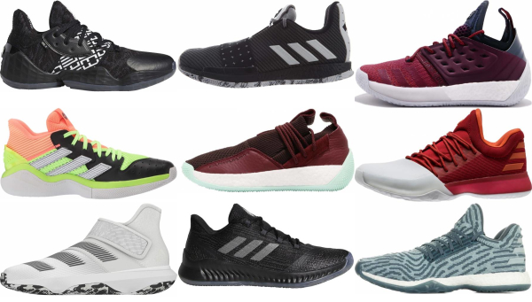
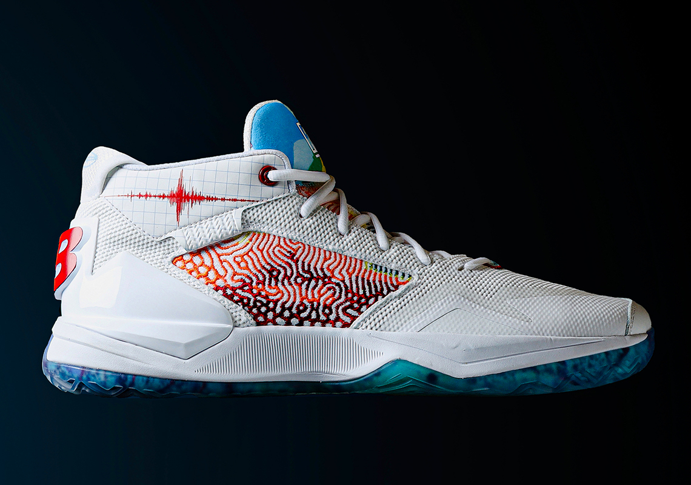
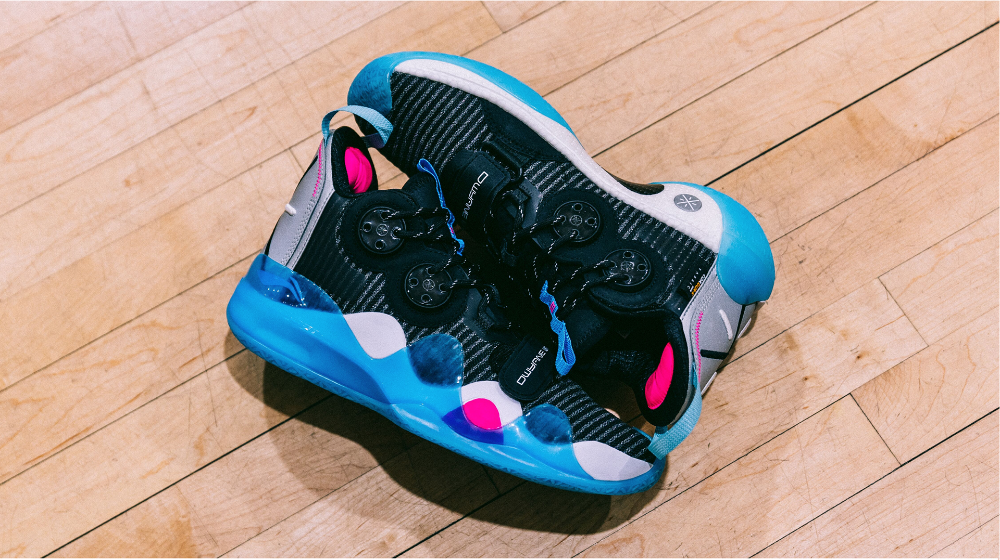

Signature Shoes
In the world of the NBA, athletes partner with a shoe brand that they stick to the brand to support all their shoe needs in games until the contract concludes. The lucky few that brands see potential in get offered to customize and make their own shoes with brands to maximize revenue. Every basketball fan has a favourite team or favourite player. Brands exploit this and tries to push people to buy shoes. Its a scam but it makes people feel like they are pros so its fine.
Kobe Bryant
One of the most influential people in the world, Kobe is a legend. He went into the NBA strsaight out of highschool playing at the position of shooting guard and had one of the best careers of all time. A younger resemblance of Michael Jordan, he achieved 5 rings in 20 years while staying with the same team, The Los Angeles Lakers. He was a 18-time All-Star, 15-time member of the All-NBA Team, 12-time member of the All-Defensive Team, 2008 NBA MVP, and a two-time NBA Finals MVP. Kobe signed with Nike and they soon created a line of shoes for him. It is one of the most used shoes across the NBA with more than 84 players using it. Sadly, he passed away on January 26 2020 through a helicopter crash. As you can see above, these are some of his most famous shoes.
Since Kobe passed away, Nike temporarily took all his shoes off the website so no one can buy them. But in August 24th, there was a mamba day where some shoes and jerseys were available. If you want to have a look at the kobe shoes that are available: click here!
James Harden

James Harden is a shooting guard on the Houston Rockets. He is one of the most known players in the league right now with his signature stepback 3s. He rocks all his games with his big beard, dances in pre-game warmups and is known as one of best players in the league that pushes fashion barriers. Playing at the position of shooting guard, James Harden was a 8-time All-Star, 7-time member of the All-NBA Team, 3-time scoring leader, 1-time assists leader and the 2018 NBA MVP. He signed with adidas and he is now the face of the basketball facet of the brand. Adidas has created 4 shoes for Harden so far and the Harden Vol 5 is soon to be on the market as well. In the picture above, you can see some of the best of his shoe line.
Currently the 5 is still not out yet, but the Harden Volume 4 is still available. If you want to have a glance, or possibly buy it: click here!
Kawhi Leonard

Kawhi Leonard has one of the most interesting personalities in the league. Known as the player that never talks or smiles and has a weird laugh, Kawhi is argueably one of the best players in the NBA. Kawhi started his career with the San Antonio Spurs for 8 years and won a championship, then was traded to the Raptors for 1 year and won a Championship there as well. Last year he went to the Los Angeles Clippers to play back in his home town. Kawhi signed with New Balance even though they have never been known as a basketball brand but last year they created shoes called the New Balance OMN1S. These shoes were ranked one of the best shoes of 2019 by Weartesters.com. This year, New Balance announced that they were going to be making a personal shoe for kawhi and above is one of the colourways of the shoe.
If you are an introvert but loves to play or watch basketball, the Kawhis might be the shoe for you. click here to have a look for yourself!
Dwyane Wade

Dwyane Wade is one of my favourite NBA players. Last year, he retired with a great career in the NBA. He spent most of his career with the Miami Heat while spending a year each with the Chicago Bulls and the Cleveland Cavaliers. He is best known as a member of the inconic duo of Miami Heat with Lebron James. They went on to win 2 of the 3 championships Wade has under his belt. He used to be partnered with Converse where 4 shoes were made for him and then Jordan that created 2 shoes for him and then he signed a 10-year 60 million dollar contract with a chinese brand, Li-Ning, where he stayed for the rest of his career. Above is the most recent shoe created for him, the Way of Wade 8. After leaving the league last year, he passed on the brand to an upcoming basketball player to carry on his legacy, D'Angelo Russell.
If you want to have a look for yourself or maybe even buy the shoes: click here!